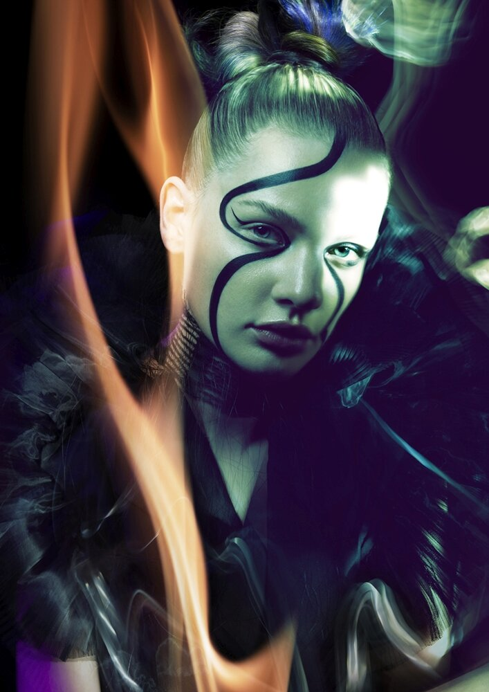
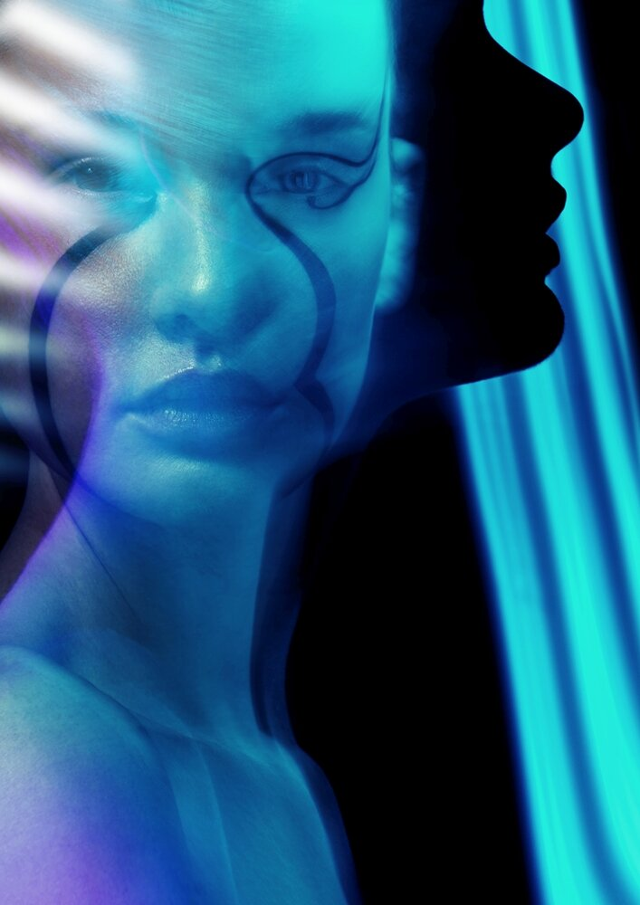
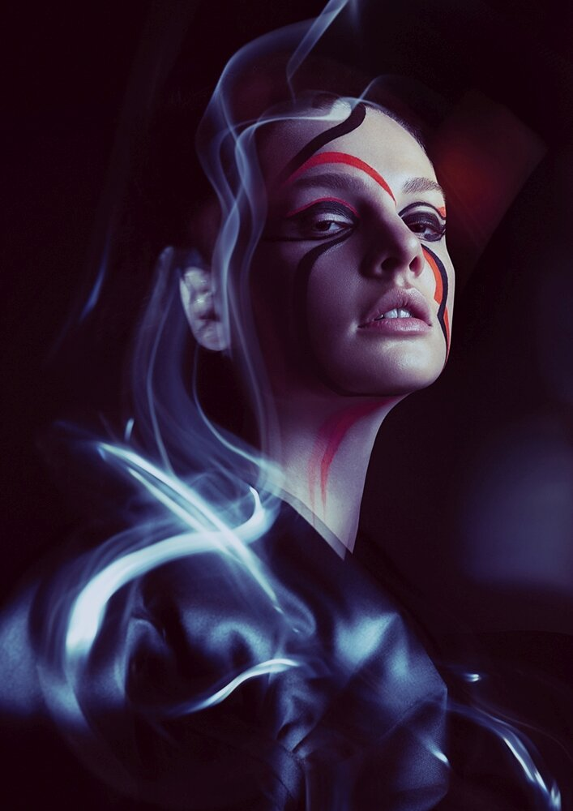
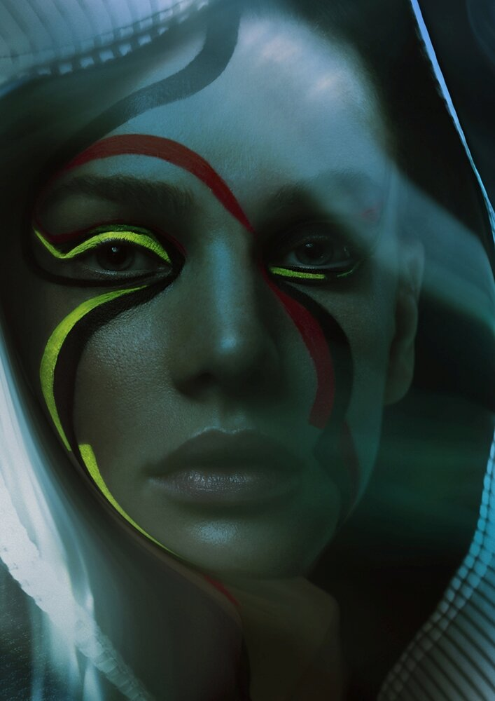

IVO DE KOK - FOTOGRAFIE MARK VAN WESTEROP - HAAR ANGELIQUE STAPELBROEK - MAKE-UP TANJA VAN ROEMBURG - STYLING MARK VAN WESTEROP - HAAR ANGELIQUE STAPELBROEK - MAKE-UP TANJA VAN ROEMBURG - STYLING MIRTHE NEXTWORLDWIDE & GH MEXICO - MODEL
Jurk: eigendom stylist

Top: Christina Nolte. Ketting: vintage

Eigendom stylist

Handschoenen: Christina Nolte

Jas als cape Mirte Engelhard
Jurk: eigendom stylist
Tagged: Ivo de Kok fotograaf, tanja van roemburg styling, Mirte Engelhard ontwerper, Mark van Westerop haarstylist kapper, Angelique Stapelbroek make-up